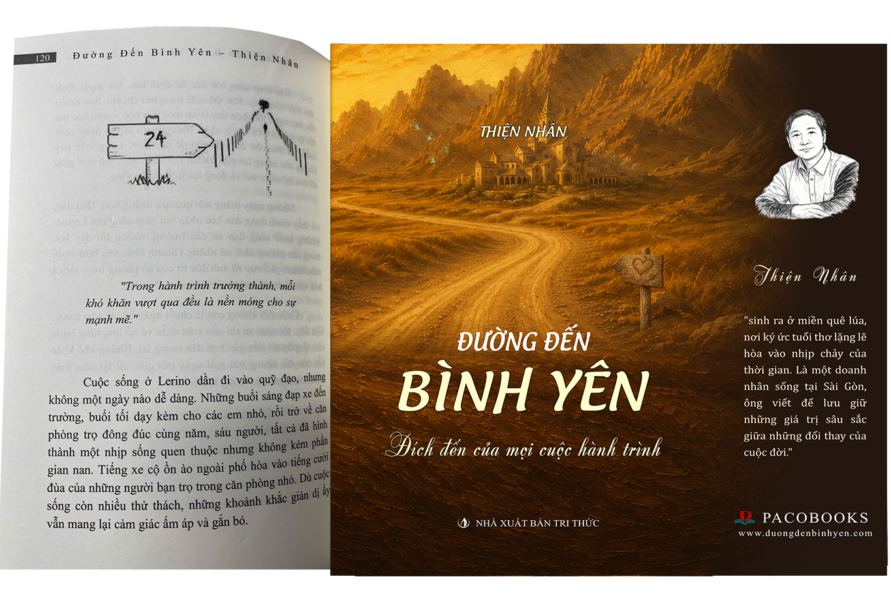
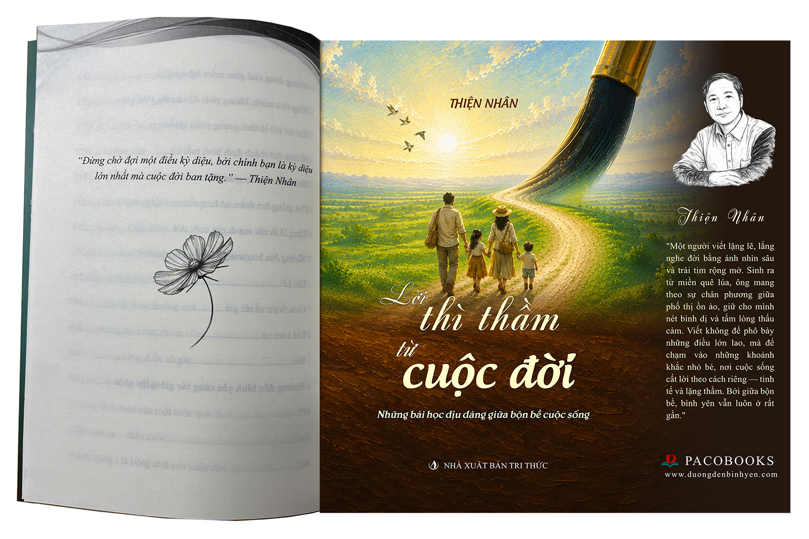
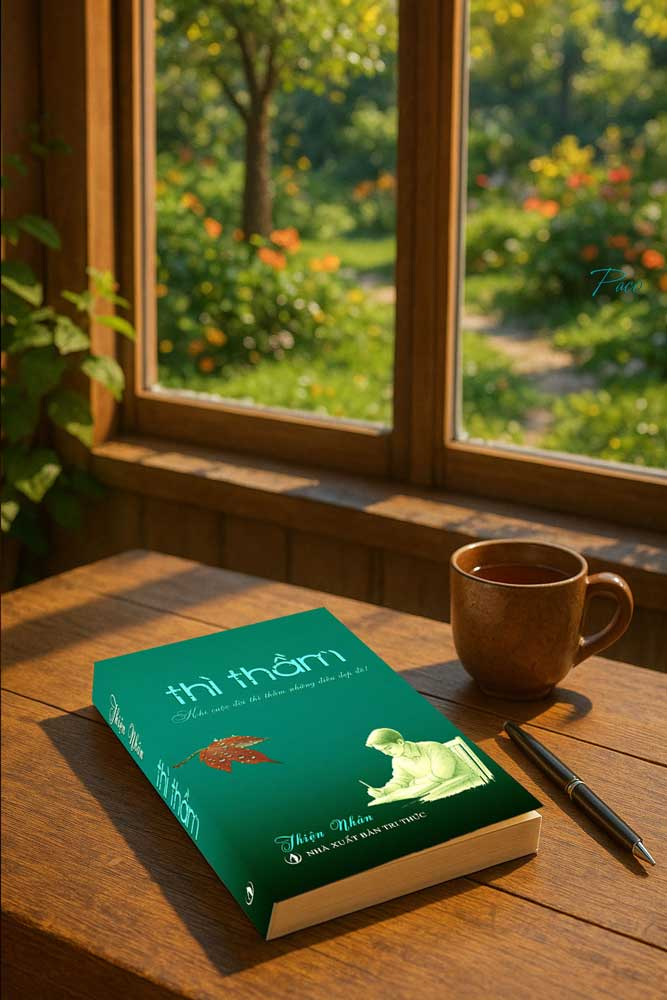

“Đích đến của mọi cuộc hành trình”
Có những điều đã từng đi qua đời ta, tưởng đã quên, nhưng chỉ cần một dòng cảm xúc đúng lúc, mọi ký ức như trở về nguyên vẹn. Đường Đến Bình Yên là cuốn sách có thể làm được điều đó – không bằng những câu chuyện kịch tính, mà bằng những mảnh đời bình thường, đủ thật để người ta nhìn thấy chính mình.
Nó không cố dẫn dắt, cũng không tìm cách đánh động – chỉ nhẹ nhàng mở ra những lát cắt quen thuộc đến mức ta ngỡ như từng sống qua, từng giữ lại, từng lặng lẽ cất sâu trong lòng suốt nhiều năm tháng.
Tác phẩm theo chân Paco – một cậu bé bước ra từ vùng quê yên bình để đi vào một thế giới khác, nơi mọi thứ không còn rõ ràng đúng sai như trong trí nhớ tuổi nhỏ. Nhưng câu chuyện không chỉ là về Paco. Mỗi bước đi của cậu – mỗi giằng co, mỗi lần hoài nghi, mỗi khoảnh khắc mỏi mệt đến mức muốn buông tay – đều là hình ảnh phản chiếu của những điều mà ai rồi cũng phải trải qua.

“Những điều chưa bao giờ được nói thành lời.”
Có bao giờ bạn đứng giữa một đám đông ồn ào nhưng vẫn cảm thấy một sự tĩnh lặng đến lạ lùng bên trong mình? Đó là lúc những thanh âm của cuộc sống ngoài kia lùi lại, để nhường chỗ cho những tiếng thì thầm của trái tim.
Thì Thầm không phải là một cuốn sách kể chuyện. Nó là những mảnh ghép cảm xúc, những suy tư vụn vặt nhưng đủ sâu để ta phải dừng lại và lắng nghe. Nó giống như một người bạn cũ, ngồi xuống bên cạnh bạn trong một buổi chiều nhạt nắng, không cần nói quá nhiều nhưng thấu hiểu hết những gì bạn đang mang nặng.
Mỗi trang viết là một lời thủ thỉ về những nỗi buồn không tên, về những niềm vui nhỏ bé đã bị bỏ quên trong dòng đời hối hả. Cuốn sách mời gọi ta đối thoại với chính mình – điều mà đôi khi trong cuộc sống thường nhật, ta đã vô tình từ chối.
Đừng đọc Thì Thầm khi bạn đang vội. Hãy dành cho nó một khoảng lặng, một tách trà, và để những con chữ dẫn dắt bạn trở về với những miền cảm xúc nguyên sơ nhất của mình.


“Đích đến của mọi cuộc hành trình”
Nhân vật chính, Paco, rời bỏ ngôi làng nhỏ với trái tim còn đầy khát vọng lẫn hoang mang. Anh bước vào tu viện – nơi dạy anh sự im lặng, nhẫn nhịn, nhưng cũng gieo vào anh nỗi cô đơn lạ lẫm. Khi rời tu viện, thế giới ngoài kia hiện ra rực rỡ, ồn ào, nhưng ẩn chứa những cạm bẫy, phản bội, đổ vỡ.
Anh chạy theo những giấc mơ, lao vào những con đường tưởng là ánh sáng – chỉ để nhiều lần vỡ vụn. Mỗi bước chân của Paco đều in dấu một câu hỏi không dễ trả lời: “Bình yên là gì? Ở đâu? Bao giờ mới chạm tới?”. Anh ngỡ nó nằm ở một nơi chốn, một thành công, một ai đó. Nhưng càng đi, càng thấy lòng trống trải.
Những vết thương chồng chất, những lần ngã gục, lại dạy anh rằng: bình yên không nằm ở đích đến, không nằm trong thành quả, mà nằm ở khoảnh khắc dám dừng lại, đối diện, và chấp nhận chính mình. Tác giả Thiện Nhân không tô hồng cuộc đời. Ngôn từ giản dị, tinh tế, nhưng giàu sức nặng.
Khi gấp sách lại, bạn sẽ nhận ra: mỗi bước đi, dù vấp ngã hay dằn vặt, cũng đều là một phần cần thiết để quay về với chính mình.

“Khi cuộc đời thì thầm những điều đẹp đẽ!”
Không ai chỉ ta cách buông bỏ mà vẫn giữ được lòng yêu thương. Và cũng không ai nhắc rằng: những vết nứt, đôi khi, là chỗ để ánh sáng lọt vào. Tác phẩm Thì Thầm không phải là một bản tuyên ngôn. Nó giống như một khung cửa sổ – mở ra từng mảng đời nhẹ tênh nhưng sâu thẳm.
Mỗi câu chữ là một lần soi chiếu: về lòng kiên cường không ai thấy, về sự tử tế không cần phô trương, về tình yêu không ràng buộc. Đọc cuốn sách này, ta bắt gặp hình ảnh người đã gục ngã – nhưng vẫn lặng lẽ đứng dậy, không vì ai nhìn, mà vì bản thân không thể buông xuôi.
Thì Thầm không dẫn ta đi đâu cả. Nó chỉ mời ta dừng lại. Dừng lại để tâm hồn được bắt kịp thể xác. Dừng lại để chấp nhận – không phải vì bỏ cuộc, mà vì cần yên bình. Dừng lại để nhận ra rằng: thành công không nằm ở tiếng vỗ tay, mà ở những bước đi kiên cường không ai nghe thấy.
Tác phẩm này dành cho những ai từng tổn thương – và vẫn muốn sống dịu dàng. Dành cho những người không chọn trở nên cứng rắn, mà chọn trở nên chân thành. Nếu bạn đang đi qua những ngày không dễ dàng, hãy thử một lần lật mở Thì Thầm. Không để giải quyết điều gì. Chỉ để nhớ rằng: sống sâu sắc… không có nghĩa là phải nói lớn.

Cuốn sách đầu tiên mở ra hành trình viết về chữa lành và tìm lại sự tĩnh lặng trong tâm hồn.

Xuất bản và phát hành 05/2025Tập tản văn ghi lại những chiêm nghiệm nhẹ nhàng, như lời thì thầm từ sâu thẳm trái tim, nâng đỡ người đọc trong từng khoảnh khắc đời sống.
Chuỗi tác phẩm sắp ra mắt, tiếp tục đồng hành cùng bạn đọc trên con đường tìm kiếm bình yên và sự thấu hiểu.
Những trang viết không chỉ là câu chữ, mà là nhịp cầu giúp bạn tách mình khỏi những xao động, tìm về sự tĩnh lặng giữa thế gian bộn bề.
Mỗi dòng tâm tình là một tấm gương phản chiếu, giúp bạn nhìn sâu vào nội tâm để thấu cảm và tìm lại chính mình.
Không lý thuyết suông, đây là những tri thức chắt lọc từ chính những vết thương, niềm vui và sự tỉnh thức có thật trong đời tác giả.
Giúp sự an yên không còn là mong ước xa xôi, mà trở thành hơi thở hiện hữu trong từng quyết định và khoảnh khắc của cuộc sống đời thường.